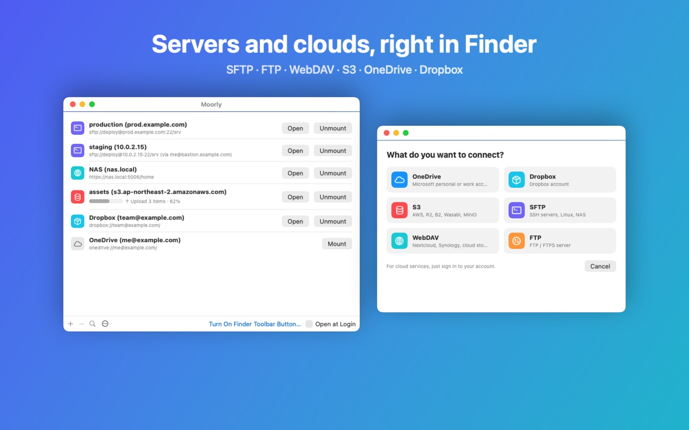
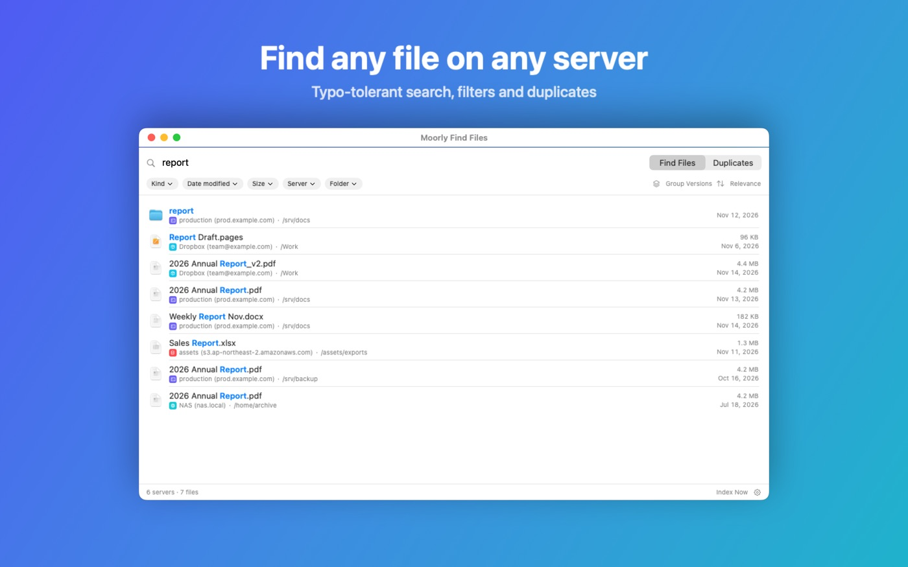
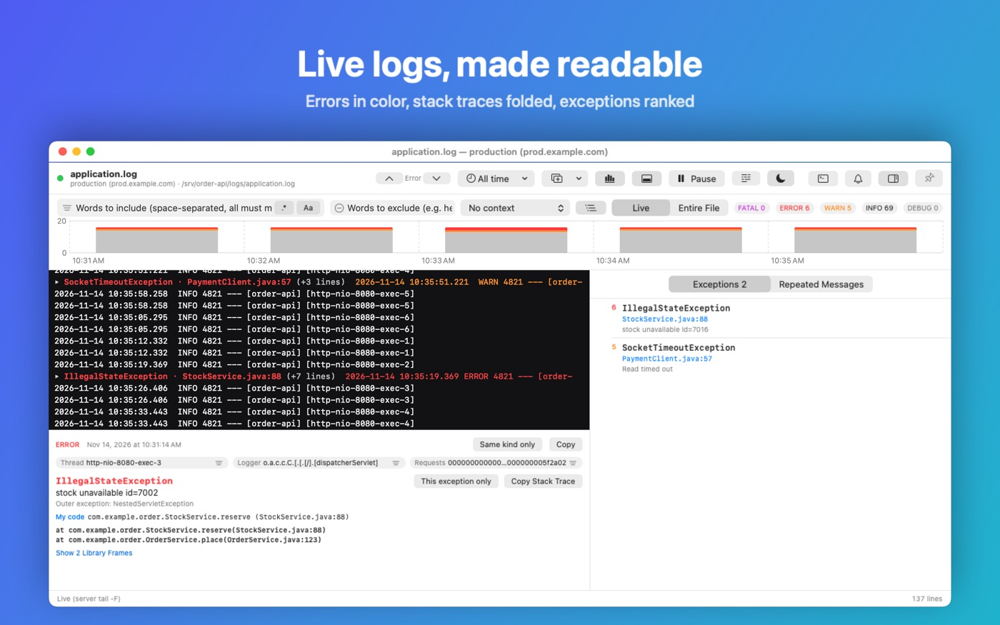

Moorly User Guide
Moorly puts SFTP, FTP, WebDAV and S3 servers, OneDrive and Dropbox in the Finder sidebar so you can open and save files as if they were on your Mac. It can also work with folders already on your Mac, such as iCloud Drive or a Google Drive app folder.
Getting started

- Click the Moorly icon in the menu bar and open Connections.
- Click + (⌘N) and choose a service.
- Servers (SFTP, FTP, WebDAV, S3): enter the address, user name and password or key, then click Test Connection and Save.
Clouds (OneDrive, Dropbox): click Sign In with Microsoft (or Dropbox)…. The sign-in page opens in your browser. After you sign in and allow access, click Open when the browser asks to open Moorly, check the name and click Save. - Click Mount in the list. The connection appears under Locations in the Finder sidebar.
~/.ssh/config in one go. SFTP servers are checked the first time you mount them.SFTP tips
- Use Import from ~/.ssh/config… to reuse your existing host settings.
- If you need to go through a jump host, enter it under Advanced › Jump host.
- When you mount the server root (
/),/procand/sysare hidden (they are constantly changing virtual folders).
Menu bar panel
Click the Moorly icon in the menu bar to open the panel. (Control-click or ⌥-click opens the classic menu.)
- Servers: the dot on each icon shows the status — green mounted, orange a problem, gray not mounted. Click a row to open the folder you last viewed. … has Unmount, Refresh, Analyze Disk Usage, Open in Terminal and more.
- Folders: for each server, ★ Favorites · 🔥 Frequent · 🕘 Recent. Hold the pointer over a folder and click ☆ to add or remove a favorite.
- Frequent lists folders you opened at least twice in the last 30 days, most opened first. Set how many to show per server in Settings › Menu.
- Folders that Moorly opens keep their history, so the Finder’s ◀ (Back) and ⌘↑ take you to the enclosing folder.
- Transfers: click ⇅ at the top of the panel (or Transfers… in the right-click menu) to see uploads and downloads, with progress, failure reasons and Try Again, and per-server Pause.
- Folder Sync: from a server’s … menu or Folder Sync… in the right-click menu, compare a Mac folder with a server folder and upload or download only what changed. Compare shows a preview first; files changed separately on the receiving side are reported as conflicts instead of being overwritten.
Many servers: tree and tabs
In Settings › Menu Bar Panel › View, choose List, Tree or Tabs.
- Groups: set a group (for example, Production or Development) in the Group field of the connection editor or from the server’s … › Group menu. Servers without a group are grouped automatically as Server (SFTP, FTP, WebDAV) and Cloud (S3, OneDrive, Dropbox); local folders get their own group.
- Tree: collapse and expand groups and servers with ▸. Expand a server to see its favorite, frequent and recent folders right below it. Moorly remembers what you collapsed.
- Tabs: click a tab at the top (All or a group) to see only that group’s servers and folders.
- With 9 or more servers and local folders, a Filter by server name field appears at the top. If the list is taller than the screen, it scrolls inside the panel.
Drag to upload
When you pick up a file in the Finder, a small “Upload with Moorly” area appears below the menu bar icon. Drag the file onto it to see folders for each server.
- Drop on a folder to upload it there. If a file with the same name exists, Moorly keeps both (“name 2”).
- Drop on a server title to choose where to upload.
- To show the full list right away, change Settings › Drop Panel › Style.
Local folders (iCloud Drive · Google Drive · Box · shared folders)
Work with folders already on your Mac as if they were servers. They appear in Recent, Frequent and Favorites, accept dropped files, and are included in file search.
- Click Settings › Local Folders › Add Folder…
- Choose the folder and click Add This Folder. (macOS security requires you to choose each folder once.)
| To add | Choose |
|---|---|
| iCloud Drive | The Add iCloud Drive… button (or ~/Library/Mobile Documents/com~apple~CloudDocs) |
| Google Drive | Install the Google Drive app, then ~/Library/CloudStorage/GoogleDrive-your-account |
| Box · pCloud · MEGA | Install the app, then the folder it creates (usually inside ~/Library/CloudStorage) |
| Company shared folder (SMB) | Connect in the Finder with Go › Connect to Server, then /Volumes/share-name |
Finder shortcut menu
Control-click a file or folder inside a server mounted with Moorly to see the Moorly: items.
| Item | Selection | What it does |
|---|---|---|
| Show Live Log | 1 file | Follow the log on the server, like tail -F |
| Find Same File | 1 file | Find files with the same contents on your servers |
| Open in Terminal | 1 item | An ssh session in that folder (SFTP) |
| Analyze Disk Usage | 1 folder | See which folders and files take up space |
| Add to Favorites | 1 folder | Add to ★ in the menu bar panel |
| Copy Share Link | 1 item | A share link for S3, OneDrive or Dropbox |
| Compress as tar.gz/zip, Extract, Duplicate on Server | 1 or more | Done on the server, without downloading (SFTP) |
| Always Keep on This Mac / Stop Keeping | 1 or more | Downloads ahead of time and keeps up with server changes, so it opens even when the server can’t be reached. For a folder, everything inside follows |
If an action isn’t available for the server type, Moorly tells you why.
File search

Click 🔍 in the menu bar panel, or press ⌃⌥⌘F anywhere. Finds files by name even in folders you haven’t opened.
- Forgiving of spaces and typos.
- Filter with All / Files / Folders below the search field, and by kind, date, size or folder.
- Conditions:
ext:pdfsize:>100mbkind:folderfolder:/var/logserver:proddate:week - The Duplicates tab finds the same file on several servers.
- Turn on 📌 at the top right to keep the window on top of other apps.
- Choose what to index per server in Settings › Find Files. For SFTP and FTP, system folders like
/usr,/procand/var/logare skipped.
Live logs

Menu bar panel › Live Log › Open Log File…, or Control-click a file › Moorly: Show Live Log.
- Path or name: enter a path like
/var/log/syslog, or just a name likeappand pick from the list below (most recently modified first). - Enter a folder to follow the most recently modified file in it and its subfolders. When a newer file appears (for example, a new daily log), Moorly switches to it within 30 seconds. You can add a name:
/app/log/*api* - Choose several servers to merge their logs by time.
- Filters, excluded words, context lines, colors by level, grouped repeated messages, a timeline chart, pause (⌘P), dark 🌙 and keep on top 📌.
- 🔔 Watch: get a macOS notification for certain words or error spikes (keeps working after you close the window).
tail -F on the server, so lines appear almost immediately. For accounts that can’t run commands and other server types, Moorly reads new data every 1.5 seconds.Terminal (iTerm2 · Terminal)
- Control-click an SFTP server in the connection list › Open in iTerm2 (or … in the panel). Choose the app in Settings › Terminal.
- Set Up Login Without Password… creates an SSH key for this Mac (default
~/.ssh/moorly_ed25519) and adds one public-key line to~/.ssh/authorized_keyson the server. After that, the terminal doesn’t ask for a password.
Permissions — why does macOS ask?
| What macOS asks | Why |
|---|---|
| “Moorly wants to control Finder” | To record recent and frequent folders, Moorly checks which folder the frontmost Finder window shows — only while Finder is in front, and it never touches your files. Turn off: Settings › Menu › Record Folders Opened in Finder |
| “Moorly wants to control iTerm2 (Terminal)” | To send an ssh command when you open a server in the terminal. |
| A folder picker | You choose exactly which folders Moorly may use, such as local folders or where to save an SSH key. |
| Notifications | Log-watch alerts. |
If you declined, change it in System Settings › Privacy & Security › Automation.
Free and Pro
The free version includes every feature, with one connection of each type (SFTP, FTP, WebDAV, S3, OneDrive, Dropbox), one local folder and one log watch. A one-time Moorly Pro in-app purchase removes these limits: unlimited connections, local folders and log watches.
FAQ
Saving a OneDrive connection says “This account doesn’t have a OneDrive”
The personal account has never opened OneDrive. Sign in once at onedrive.live.com in your browser, then try again. Work or school accounts need a OneDrive (Microsoft 365) license.
My work Microsoft account is blocked (“Need admin approval”)
Your organization blocks outside apps. Ask your administrator to approve Moorly.
A warning (⚠︎) appears in the list
The server couldn’t be reached or your sign-in expired. Choose … › Try Again in the panel, or click the warning to sign in again.
Folders I open in the Finder don’t appear in Recent
Make sure Finder control is allowed (see Permissions). If the panel shows an orange notice, click Open Automation Settings….
There are no Moorly items in the shortcut menu
They appear only inside servers mounted with Moorly, not in local folders such as iCloud Drive.
SFTP through a jump host fails
The jump host’s sshd must allow TCP forwarding (AllowTcpForwarding yes, the default). For the host, enter the address as seen from the jump host.
I don’t get log-watch notifications
Allow notifications in System Settings › Notifications › Moorly.
Contact
Email giveing7777@gmail.com or open an issue on GitHub Issues with your macOS version and what happened. Please don’t include passwords or server addresses.